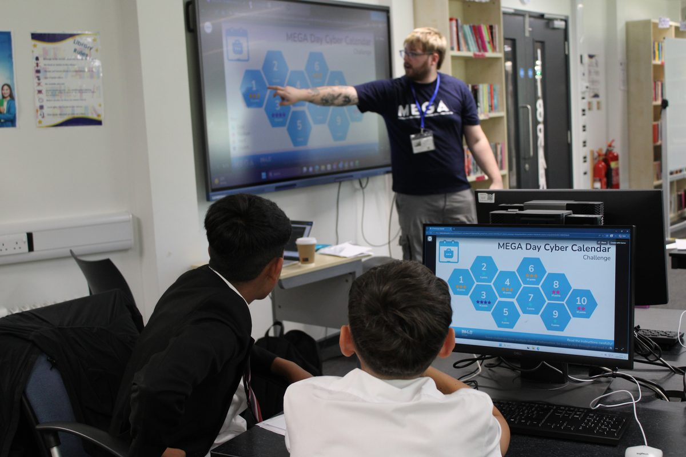
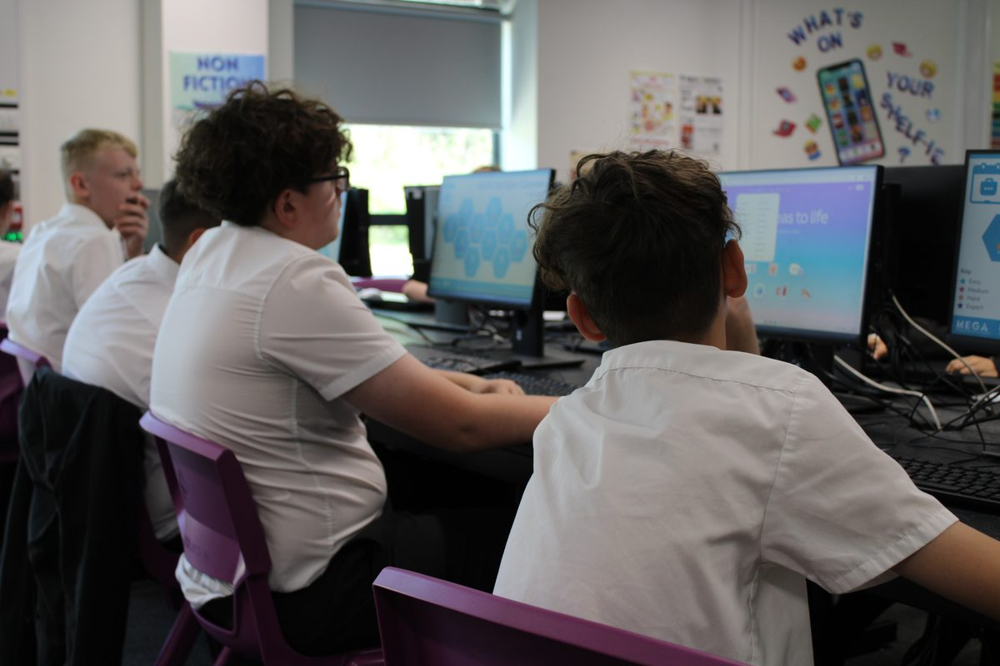
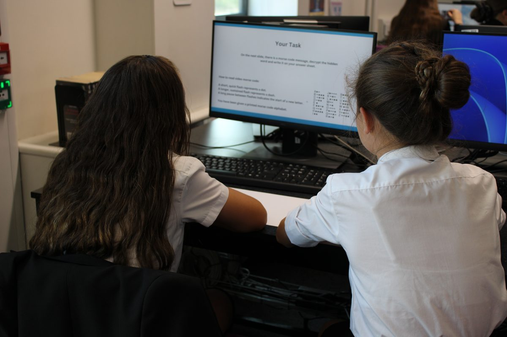

Welcome to Unity Boost edition 7 — the last one of the school year! At this point I think we can all agree ‘fortnightly’ was less of a schedule and more of an aspiration. Let’s rebrand to ‘termly, with vibes’ and never speak of it again.
This edition, Scary Words tackles the Context Window — the reason AI chatbots forget what you told them twenty minutes ago (complete with an interactive demo where you can watch one forget in real time). The Tool Spotlight finally answers the question I get asked most in the corridor: “how do you make those ridiculous pictures of yourself?” Say hello to Nano Banana. Yes, that’s its real name.
We’ve also got hot-off-the-press photos from Inb4’s visit to our Year 8s, a look back at a genuinely brilliant year of AI at Unity, four fresh prompts (including two designed to make September Future You extremely grateful to July Current You), and some proper summer reading.
One last time for 25/26: let’s get boosted!
Tom x
Last edition we learned that AI measures everything in tokens — little chunks of words. The context window is the follow-up question: how many tokens can the AI hold in its head at once?
Because here’s the secret: AI chatbots don’t actually have a memory. Every single time you send a message, the AI re-reads the entire conversation so far and writes the next reply. The context window is the maximum amount of conversation it can re-read — and once your chat gets longer than that, the oldest bits simply fall off the end.
Think of it as a whiteboard of a fixed size. Everything you and the AI say gets written on the board, and the AI can only ‘know’ what’s currently on it. When the board fills up, the oldest writing gets wiped to make room for new stuff. It’s not being rude when it forgets your seating plan — someone rubbed it off the board.
Why should you care? Because this explains some genuinely baffling AI behaviour:
Modern context windows are huge — some can hold several novels’ worth of text — but they are always finite. And remember from last edition: more tokens = more expensive to run. That’s why the biggest windows live behind the priciest subscriptions.
Here’s a (lightly dramatised) chat between a history teacher and an AI. This particular AI has a tiny context window: a whiteboard with room for just 60 tokens — and as you’ll remember from last edition, every message costs a few. Hit play and watch the conversation unfold. When the whiteboard fills up, something has to go…
Press play to watch the AI’s whiteboard fill up.
Real context windows hold hundreds of thousands of tokens, not 60 — but the mechanism is exactly the same. The moment a message slides out of the window, the AI doesn’t just forget it. It has no idea it ever knew it.
Google’s image AI with the silly name and the serious results
Terminator Tom. Indiana Jones Tom. And now, above, Bernie Sanders Tom. People keep asking how those get made, and the answer is always the same tool: Nano Banana, the image generator built into Google Gemini. (Google’s codename for it leaked, everyone loved it, and they just… kept it.)
You type a description — or upload a photo and describe a change — and it produces a genuinely impressive image in seconds. No design skills, no Photoshop, no idea what a ‘layer mask’ is. It’s the closest thing to a magic wand I’ve featured in this newsletter, and it’s the most fun you’ll have with AI all summer.
The important bit: our AI Policy lands in September, so for now this is a staff playground, not a student tool. Two hard rules in the meantime: never upload photos of students (or anyone who hasn’t said yes — my face is used with my full, enthusiastic consent), and double-check any generated image for accuracy before it goes near a lesson — AI images are confidently wrong in all sorts of subtle ways.
For your own creations, yes. Never upload student photos or personal data, only edit photos of people who’ve consented, and treat generated images like any AI output: check before you trust. Nothing student-facing until the AI Policy arrives.
Yes, to try — free Gemini accounts get a small daily allowance of image generations, which is plenty for experimenting. Heavier use (and the top-tier ‘Pro’ model with sharper text and higher resolution) needs a Google AI subscription.
Good news — Google no longer has this magic to itself. ChatGPT’s new image model, ChatGPT Images 2.0 (released this spring), is every bit as impressive — it’s arguably even better at getting text right, and the basic version is available to everyone at chatgpt.com, free accounts included (the fancier ‘Thinking’ mode needs a paid plan). Everything in this spotlight — the ideas and the ground rules — applies exactly the same. Use whichever chatbot you already know and love.
Want to see it in action?
💬 ChatGPT Images 2.0 — the rival
Just when we thought the Inb4 story was wrapped up for the year, the team saved one last twist for the final week of term — this time bringing the challenge to us. Thirty of our Year 8s spent the morning in the library tackling the MEGA Day Cyber Calendar Challenge, delivered in school by the Inb4 team.
The photos say it all — heads down, screens glowing, proper concentration. A brilliant way to round off the year. 👏



Before we all sprint for the gates, it’s worth pausing on what a year it’s been for AI at Unity:
Write a hinge question for [topic] with 4 answer options, where each wrong answer reveals a different specific misconception — and explain what each wrong answer tells me ⇒
Top Tip: Follow up with ‘now give me a 2-minute re-teach for the most likely wrong answer’ and your mid-lesson pivot is ready before the lesson starts
Rewrite this passage at three reading ages [e.g. 9, 12, 15], keeping the key subject terminology in all three versions: [paste text] ⇒
Top Tip: Add ‘gloss the technical terms in brackets for the simplest version’ so weaker readers keep the vocabulary instead of losing it
Act as a critical friend. Here’s my unit outline for [topic]: [paste]. Identify gaps, weak sequencing, and missed retrieval opportunities ⇒
Top Tip: Ask for ‘three quick wins and one big change’ — it stops the feedback being an overwhelming wall of suggestions
Design a first-lesson-back activity for [subject/year group] that surfaces what students remember from last year — low-stakes, no marking, ready in 10 minutes ⇒
Top Tip: Add ‘include a follow-up plan for the gaps it’s most likely to reveal’ — September You will be insufferably smug about this
Ofsted visited 21 schools and colleges already embedding AI and wrote up what works: the big wins are in workload (planning, resources, admin), the schools doing it well all took safeguarding and data protection seriously first, and nearly every one of them had an ‘AI champion’ — a tech-confident teacher who demystifies it for everyone else. No idea what that would look like here. None at all.
The Education Select Committee is formally investigating AI across the whole education system — how it affects critical thinking, whether it deepens inequality between students, what it means for assessment, and whether teachers are actually getting the support they need. In other words: Westminster is now asking the exact questions our staff room has been asking all year. Results expected to shape national policy.
Remember ‘AI Agents’ from Edition 5? Mollick (Wharton professor, best AI writer around) argues that era has properly arrived: we’re shifting from chatting with AI to delegating whole tasks to it. His most teacher-relevant point: the people who get the most out of AI agents are the ones with real subject expertise — because you can only supervise work you understand. Good news for people whose entire job is expertise, i.e. you.